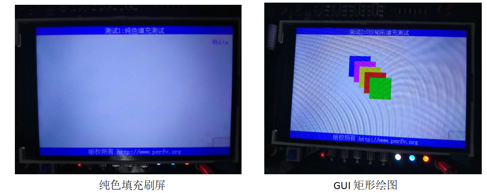
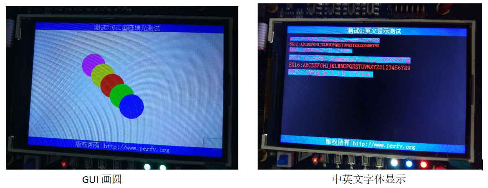
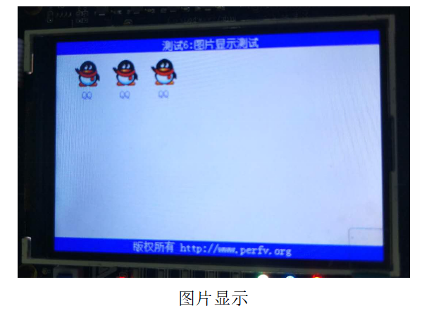

Perf-V开发板新特性之TFT-LCD应用
TFT-LCD(Thin Film Transistor-Liquid Crystal Display)是薄膜晶体管液晶显示器。MAR3528模块为3.5英寸TFT LCD，颜色为262K，分辨率为480x320。该LCD模块的控制器为ILI9486/ILI9488，支持16线数据总线接口。该模块包括5V-3.3V功率转换电路和电平转换电路。MAR3528模块直接通过Adruino接口和PERF-V开发板连接。
TFT屏幕显示功能在蜂鸟IP核中用C语言实现，通过Makefile编译连接生成可执行文件，并下载到工程板内。Perf-V开发板支持TFT屏幕显示功能，可以实现纯色填充刷屏、GUI矩形绘图、GUI画圆、中英文字体显示、图片显示等特性。
  